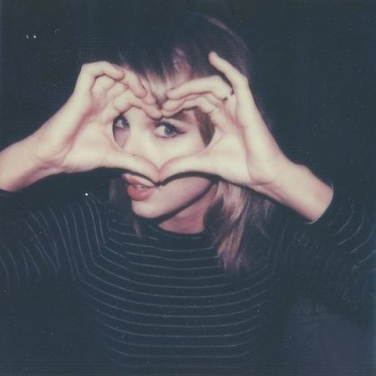
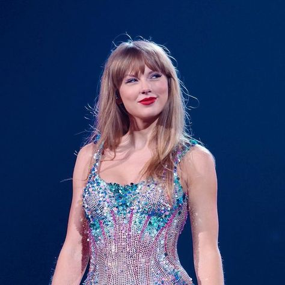

¿Quién es Taylor Swift?
Taylor Alison Swift es una cantante, compositora, productora discográfica, directora, actriz y empresaria estadounidense,
conocida por sus composiciones biográficas, reinvenciones artísticas e impacto cultural.
Comenzó a escribir canciones profesionalmente a los 14 años y firmó con Big Machine Records en 2005 para convertirse
en cantante de country, siendo la artista más joven contratada por Sony Music Publishing. Lanzó seis álbumes de estudio
bajo el sello, cuatro de ellos para la radio country, empezando con su álbum debut Taylor Swift en 2006.
Su siguiente álbum, Fearless en 2008 la catapultó a la fama, siendo el álbum más premiado en la historia de la música country.
En 2010, sacó el album Speak Now, Mientras tanto, Red en 2012 experimentó con elementos electrónicos y presentó
la primera canción número uno del Billboard Hot 100 de Taylor 'We Are Never Ever Getting Back Together'
Su quinto álbum, 1989 en el año 2014 la alejo de su imagen country, acercándola al synth-pop. El escrutinio de los medios inspiró Reputation
en 2017 con un estilo a hip-hop.
Taylor firmó con Republic Records en 2018. Lanzó el álbum pop Lover en 2019 y el documental autobiográfico Miss Americana al año siguiente.
Mientras exploraba el indie folk y el rock alternativo en los álbumes de 2020, Folklore y Evermore.
En 2022, uso el estilo pop discreto en su álbum Midnights, que volvió a consolidarla en las listas de Billboard Hot 100.
Este año saco su album de estudio The Tortured Poets Department.

¿Por qué es tan importante Taylor Swift?
Ha sido una de las cantautoras más jóvenes en ser firmadas por una compañía disquera y una de las artistas con música más vendida de la
industria. Es una de las 100 personas más influyentes del mundo.
Su impacto en la música se extiende más allá de sus impresionantes ventas de discos y premios. Ha influido en innumerables
artistas emergentes y ha sido una voz importante en la lucha por los derechos de los artistas, defendiendo la propiedad
de su música y la justa compensación en la era del streaming.
Premios y reconocimientos
- Grammy Awards: ha ganado múltiples Grammy, incluyendo el prestigioso Álbum del Año, que ganó en cuatro ocasiones
por sus álbumes «Fearless», «1989», «Folklore» y «Midnights».
- Music Awards (AMAs): ha establecido récords en los AMAs, convirtiéndose en la artista con más premios en la historia de este evento.
- Billboard Awards: Swift ha ganado numerosos premios Billboard Music, incluyendo Artista del Año y Álbum del Año.

El Ingenioso equipo de marketing detrás de Taylor Swift
Taylor no solo es una artista talentosa, sino que también cuenta con un equipo de marketing excepcional que ha jugado un papel crucial en su éxito.
Una de las claves del éxito de su equipo de marketing es su enfoque en la narrativa y la creación de una conexión auténtica con los fans.
Desde el uso inteligente de las redes sociales hasta el lanzamiento sorpresa de álbumes, cada acción de marketing está cuidadosamente
diseñada para construir y mantener un fuerte vínculo con su audiencia.
Para resumir, podemos decir que Taylor Swift...
A lo largo de su extraordinaria carrera, sus canciones han resonado con millones de personas en todo el mundo y han evolucionado,
pero siempre han mantenido su esencia única y su habilidad para capturar las complejidades del corazón humano. Ya sea explorando
los altibajos del amor y el desamor, abrazando su empoderamiento y crecimiento personal, o impactando en la cultura pop
y la industria musical, Taylor Swift ha demostrado ser una artista excepcional y una narradora magistral.
